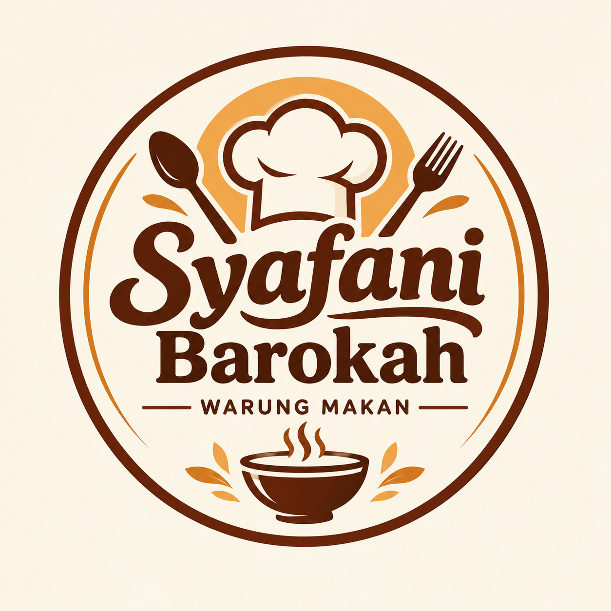

SELAMAT DATANG DI
Syafani Barokah
Rasa Rumahan,
Bikin Balik Lagi.
Nikmati berbagai pilihan makanan dan jajanan dengan cita rasa rumahan yang dibuat dengan sepenuh hati.
📍 Kantin STAIN Sultan Abdurrahman

✦
Mau Pesan?
✦Semua dibuat sederhana agar kamu bisa memesan dengan mudah.